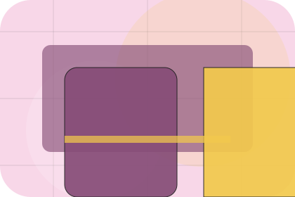
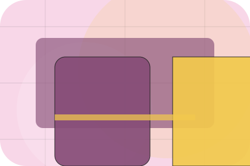
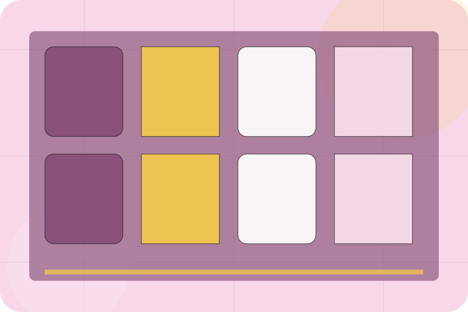
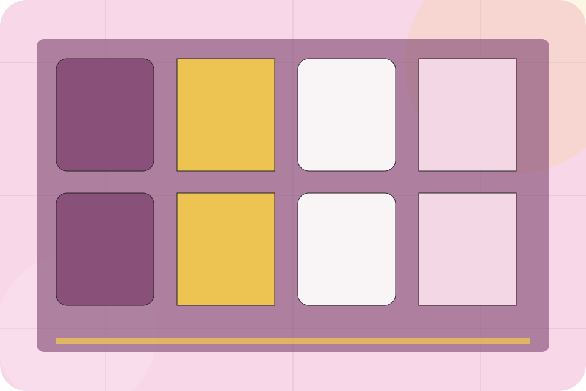
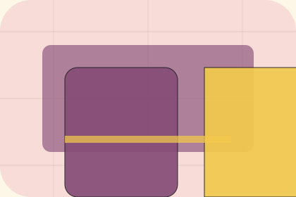

Context
Mood gives the page a specific angle instead of repeating the navigation label.
Restaurants
Surreal reservation stage for desire and social confidence.

Home / 02
Mood adds hospitality context to the home route, using the surreal reservation stage structure to support desire and social confidence before visitors choose a next step.
Table uses ornate menu cards and focused copy to make the decision easier to scan, aligning the section with desire and social confidence rather than filling space.
Open StoryHome / 03
Food adds hospitality context to the home route, using the surreal reservation stage structure to support desire and social confidence before visitors choose a next step.
Table uses ornate menu cards and focused copy to make the decision easier to scan, aligning the section with desire and social confidence rather than filling space.
Open MenuFood gives the page a specific angle instead of repeating the navigation label.
The ornate menu cards show what to compare, what to avoid, and what matters most for restaurants, cafes & food service visitors.
The final cue points to a useful internal route so the section keeps the journey moving.
Home / 05
Booking makes the contact path concrete: what to send, how the response works, and what Table needs before visitors reserve a table.
The section reduces contact friction by naming the channel, expected detail, privacy path, and response expectation instead of dropping visitors into a generic form.
Reserve TableTable keeps booking practical: send the key details, choose the right contact route, and know what kind of reply to expect.
Reserve TableHome / 06
Gallery adds hospitality context to the home route, using the surreal reservation stage structure to support desire and social confidence before visitors choose a next step.
Table uses ornate menu cards and focused copy to make the decision easier to scan, aligning the section with desire and social confidence rather than filling space.
Open Gallery
Gallery gives the page a specific angle instead of repeating the navigation label.


Home / 07
Reviews converts customer proof into a useful buying signal: the problem, the experience, and what changed afterward.
Proof stays believable by focusing on situation, service experience, and practical change rather than vague praise or unsupported results.
Open DeliveryHome / 08
Location makes the contact path concrete: what to send, how the response works, and what Table needs before visitors reserve a table.
The section reduces contact friction by naming the channel, expected detail, privacy path, and response expectation instead of dropping visitors into a generic form.
Open OffersTable keeps location practical: send the key details, choose the right contact route, and know what kind of reply to expect.
Reserve TableHome / 09
Questions handles buying doubts directly so visitors can understand timing, fit, limits, and the safest next step.
Answers are short by design: enough to remove hesitation, not so much that the page turns into documentation before the visitor can act.
Open ContactTable starts with a focused intake so the recommendation matches the visitor's context, risk, timing, and readiness.
Each route explains inclusions, exclusions, documents, timing, and the decision points that affect final delivery.
The theme uses surreal reservation stage, ornate menu cards, and menu filter, allergen toggle, reservation widget, gallery rather than a shared template rhythm.
Home / 10
Table closes the home route with a clear action, a quick reminder of the value, and a low-friction way to reserve a table.
Visitors who are ready can use the primary action. Visitors who are still comparing can scan the section links, proof, and support routes before they reserve a table.
Reserve TableThe final block keeps the choice simple: act now, compare one more proof route, or send enough detail for a focused response.
Reserve Tabledesire and social confidence
A sensory restaurant site with pastel stage surfaces, menu cards, room-gallery rhythm, and booking CTAs. Home ends with a direct path to reserve a table, plus enough context for visitors who still need to compare.

Reserve Table